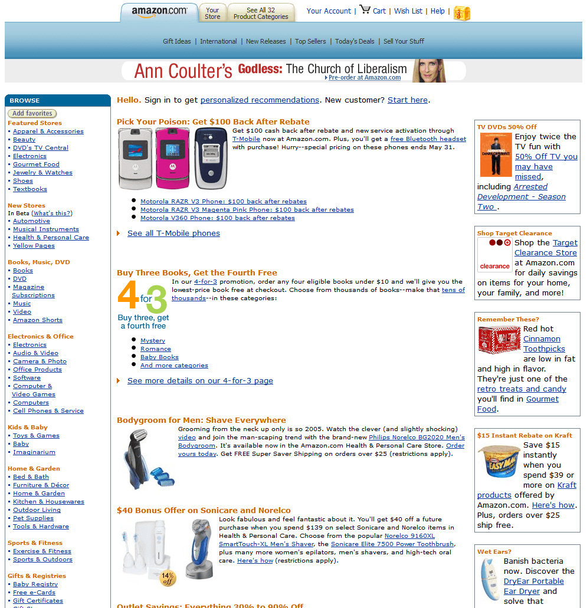

| 2004 |
| Flickr |
photo sharing community website by Ludicorp, later bought by Yahoo! |
| CSS Sprites |
optimisation technique introduced by Dave Shea that connects several smaller graphic elements into one larger image, placed on the website using the background-position feature |
| Mozilla Firefox 1.0 |
multiplatform web browser with higher security, better web standards support, as well as with a number of plug-ins that could be additionally installed |
| Facebook |
the social network is launched |
| Anonymous |
international collective of hacktivists |
| Subservient Chicken |
one of the first viral websites, from Burger King, by CP+B |
| Carl de Keyzer |
one of the earliest professional photography portfolios from a Magnum photographer, by group94 |
| Saints and Soldiers |
one of the earliest websites using the parallax effect, by Funktion12/RED Games |
| The Zoomquilt |
collaborative illustration using the infinite-zooming effect, by Nikolaus Baumgarten |
| 2005 |
| YouTube |
website for publishing and sharing video files launched by Chad Hurley, Steve Chen and Jawed Karim, later bought by Google |
| Google Maps |
the online maps goes live |
| Reddit |
social network by Steve Huffman and Alexis Ohanian |
| Adobe purchased Macromedia |
ColdFusion, Captivate, Director, Dreamweaver, Fireworks, Flash, Flex, FreeHand, and HomeSite were integrated to the Adobe software package |
| The Million Dollar Homepage |
commercial Internet community, created by the 21-year-old Alex Tew, selling 1 dollar pixels |
| Wedding Crashers |
first website using the upload-your-face idea, by Tequila |
| Corpse Bride |
movie website with an outstanding production level, by Blitz |
| Dream Kitchens for Everyone |
first website using the frozen-moment photography effect, by Forsman & Bodenfors |
| Screenfull |
cacophonous, multi-layered digital collage, by Abe Linkoln and Jimpunk |
| 2006 |
| jQuery |
introduction of the jQuery JavaScript library for the interaction between JavaScript and HTML, by John Resig |
| Django |
release of Python-based free and open-source web framework |
| Smashing Magazine |
website with regular news from the world of web design, user experience, or web development, by Sven Lennartz and Vitaly Friedman |
| Sass 0.1.0 |
introduction of a CSS preprocessor called Sass 0.1.0 (Syntactically awesome style sheets), by Hampton Catlin and Natalie Weizenbaum, in which are added variables, mixins, selector inheritance, nesting rules, arithmetic operators, and other features to the CSS syntax |
| twttr |
later known as twitter, the website is launched |
| Wikileaks |
non-profit organisation publishing classified and secret information |
| Would You Like a Website? |
website by Adobe Design Center that took their employees to the streets with video sandwich boards, by Freedom Interactive Design |
| Nike Air |
high development in user-interactive motion graphics, by Big Spaceship |
| Flash Earth |
early development of online maps that later became known with Google Earth |
| Nasty Nets |
collaborative blog created to share media artifacts found while exploring the internet, along with original compositions and collages, by John Michael Boling, Joel Holmberg, Guthrie Lonergan, Marisa Olson, et al |
| 2007 |
| iPhone |
Steve Jobs introduced the first Apple smartphone model |
| CSS-Tricks |
website for designers with css support |
| Behance Network 1.0 |
community platform for designers, photographers, and artists to show their online portfolios, Scott Belsky, later bought by Adobe |
| CSS Grid |
W3C specification for the CSS Grid to simplify the creation of complex layouts |
| tumblr |
the website is launched |
| Google street view |
Google implementation in Google Maps |
| Get the Glass |
highly creative game using 3D and video, by North Kingdom |
| Levi’s Cooper Jeans |
first 100% HTML website winning the FWA Site of the Day, by Ogilvy Worldwide |
| Good Things Should Never End |
the first website using infinitescrolling, by Poke |
| Domestic Tension |
interactive networked performance in a gallery space, by Wafaa Bilal |
| Amazon |
|

|
An American multinational technology company based in Seattle, Washington, which focuses on e-commerce, cloud computing, digital streaming, and artificial intelligence. |
|